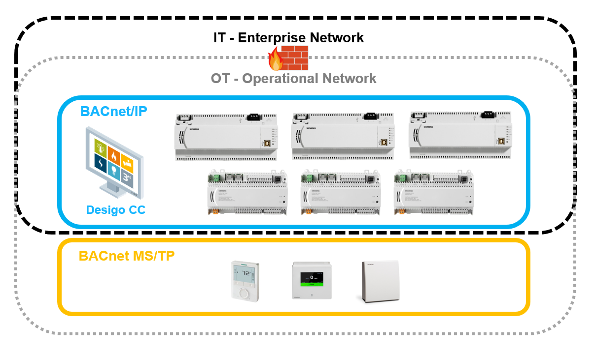
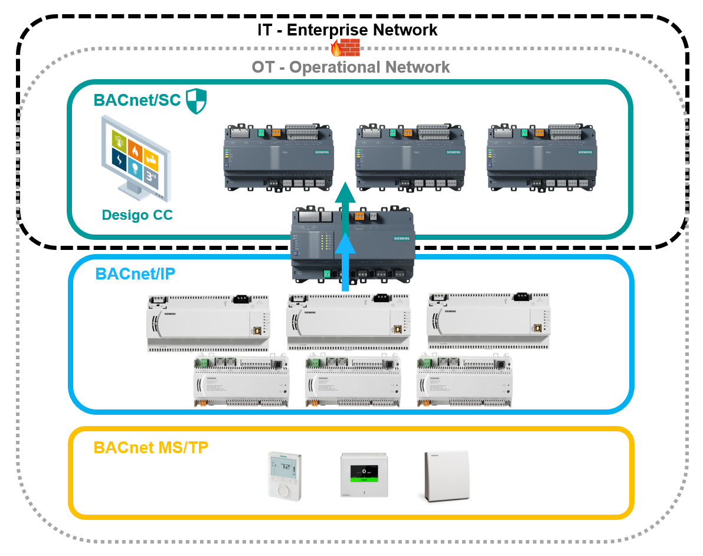

BACnet/SC extension/upgrade overview
在现有的 BACnet 系统中，Desigo CC 和主系统控制器将驻留在 BACnet/IP 上，并受到 VPN、VLAN、防火墙、DMZ 等外部方法的保护。

BACnet 系统 ALN 可以通过以下方式升级到 BACnet/SC：
- Upgrading Desigo CC to version 5.1 or higher which supports BACnet/SC node functionality.
- Installing a PXC4/5/7 as primary BACnet/SC hub and for BACnet/IP-to-BACnet/SC-to-BACnet MS/TP routing – taking its respective system limits into account.
- Using PXC4/5/7 controllers with BACnet/SC node functionality on the ALN for any new automation requirements.
- DXR2.E are BACnet/SC-ready devices which will be routed from BACnet/IP to BACnet/SC in initial projects but can be upgraded to BACnet/SC-native devices with a firmware upgrade and reconfigured to BACnet/SC nodes.
